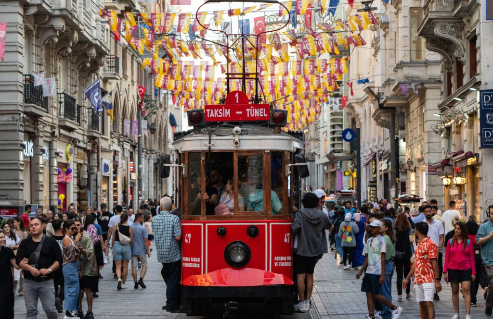

Sports
Sport offers a different way to meet Istanbul, whether you want to watch a match, run beside the water or spend a day moving between neighbourhoods.
See Istanbul Through Sport
Sport is part of everyday Istanbul life. Football has an especially visible place in the city's culture, while running, cycling, sailing, basketball and other activities offer visitors another way to connect with the city.
Ways to Stay Active
Running
Waterfront routes around the Bosphorus and Marmara offer different distances and scenery.
Cycling
Coastal routes and the Princes' Islands can be appealing for riders looking for a different view of the city.
Football
Istanbul's major clubs have passionate local followings. Match access and schedules should be checked for the current season.
Basketball
Follow the current fixtures if you want to experience an indoor sporting atmosphere.
Sailing
The Bosphorus and surrounding waters make Istanbul a natural city for water-based experiences.
Walking
Sometimes the best exercise is simply crossing a neighbourhood from one waterfront to another.
Watching Sport in Istanbul
If you want to attend a match, check the official club or competition information for the date, venue, ticket conditions and entry requirements. Availability can change quickly around major fixtures.
A Different Kind of City Tour
Combine sport with neighbourhood culture: a morning run by the Bosphorus, a walk through Kadıköy, a ferry crossing and an evening match can turn a standard sightseeing day into something much more personal.
Explore More of Istanbul
Want to experience Istanbul, not just read about it?
Use this guide to plan your own day, or let our concierge team help with the practical details around it.
Request Concierge →